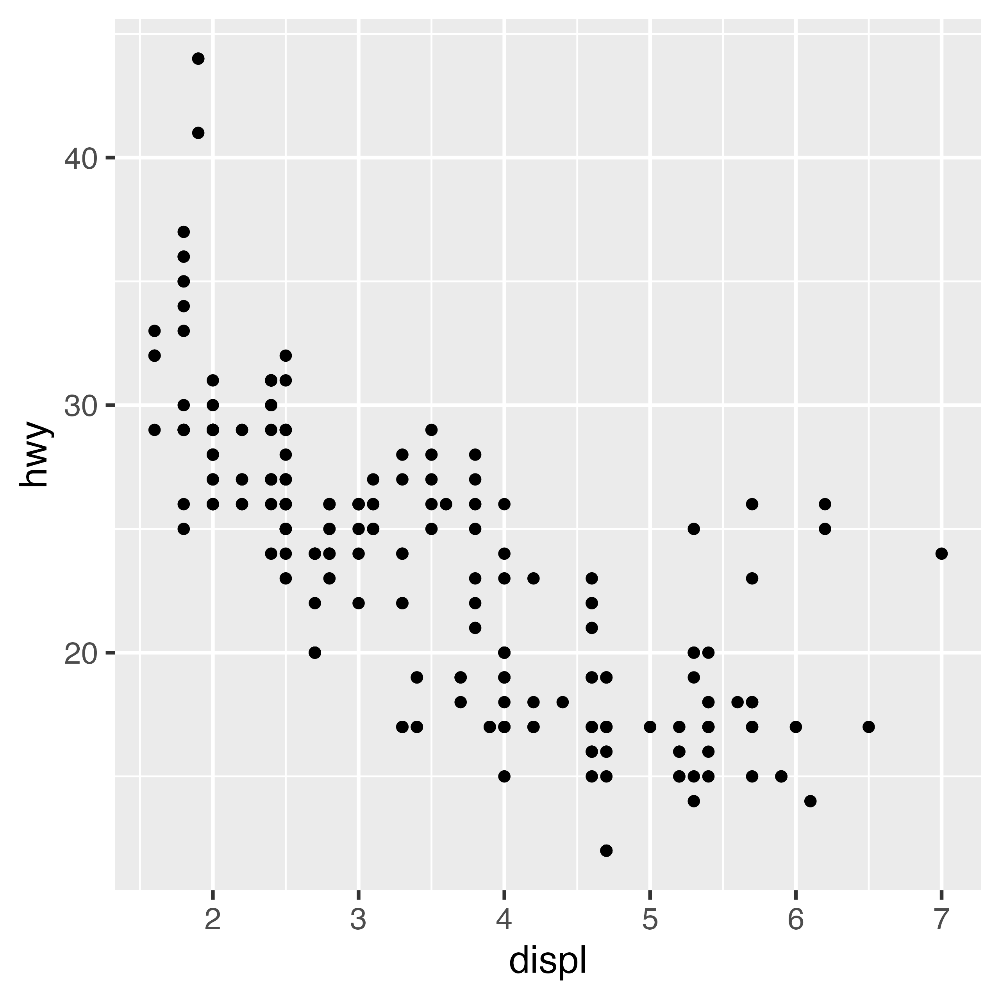
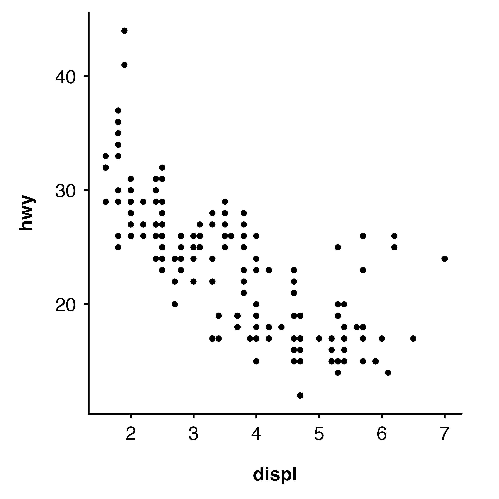
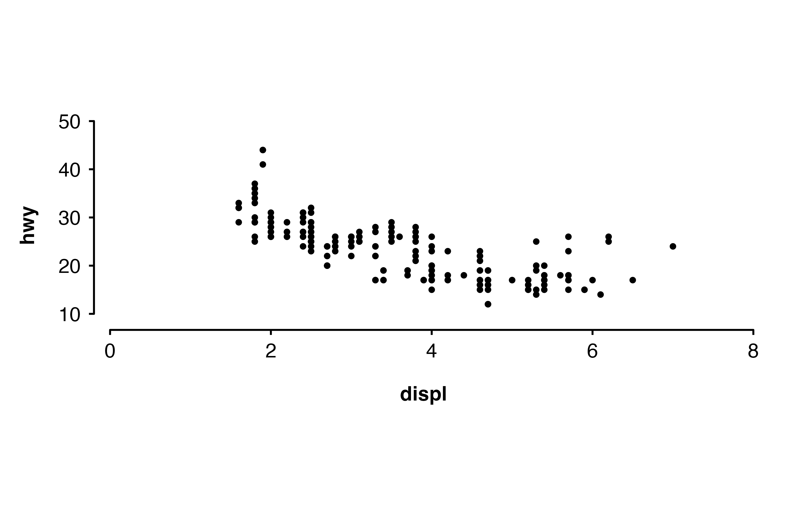
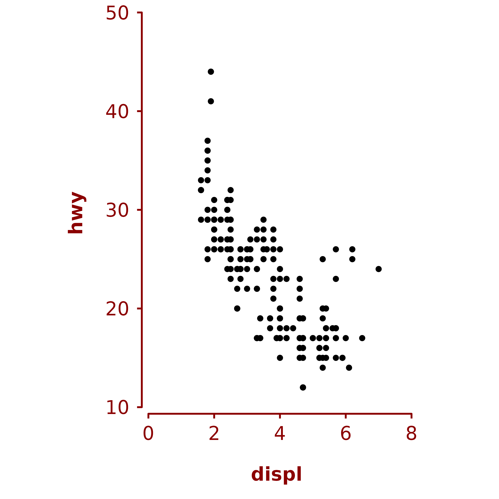
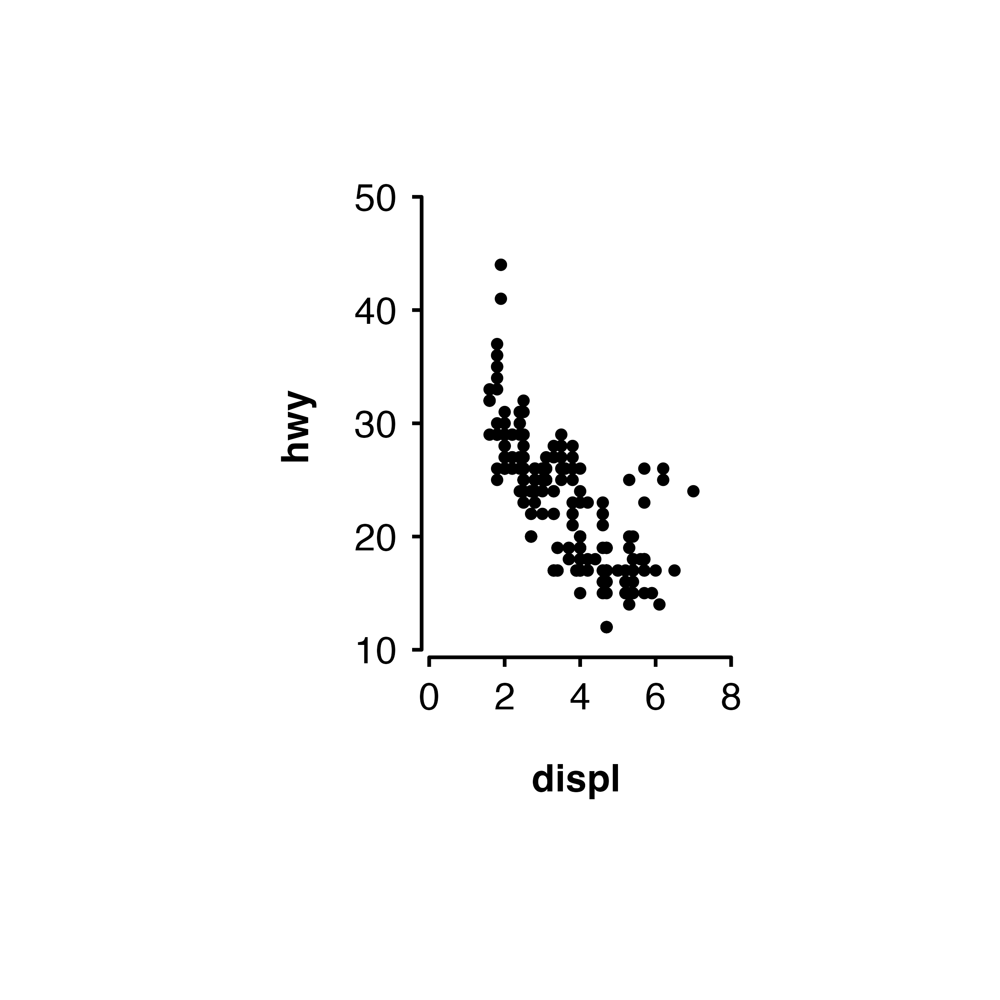
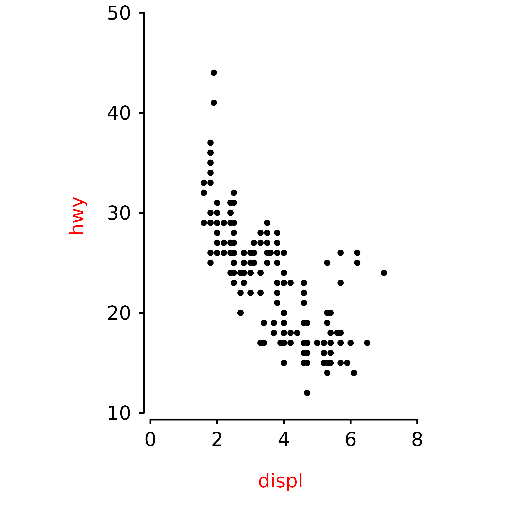

+ ckb_style() does three things to a ggplot2 plot:
- applies a CKB theme (i.e. change the overall appearance)
- extends the plotting area and manually adds axis lines (so that you can have a custom sized gap between the plotting area and the axes)
- applies a fixed aspect ratio
Examples with a scatter plot
Make a scatter plot with ggplot.
plot <- ggplot(data = mpg, aes(x = displ, y = hwy)) + geom_point(size = 1)
plot
Use + ckb_style() to apply a CKB theme, add separated
axis lines and fix the aspect ratio.
plot + ckb_style()Or apply just a CKB theme and use axis lines.
plot + theme_ckb() + theme(axis.line = element_line())
Aspect ratio and panel sizes
Change the aspect ratio of the plot.

Set the width of the plot (width controls the length of
the x axis).
Modifying the appearance of the plot
The colour arguments of theme_ckb() and
ckb_style() can be used to change the colour of the
non-data components of the plot.

The plot.margin arguments of theme_ckb()
and ckb_style() can be used to adjust the margin around the
plot.

If you wish to override some aspect of the theme applied by
ckb_style() or theme_ckb(), then this can be
done by adding a theme after + ckb_style(),
plot + ckb_style(xlims = c(0, 8),
ylims = c(10, 50)) +
theme(axis.title = element_text(colour = "red", face = "plain"))
Warning about axis limits
If any data points you are plotting fall outside the axes, then they will still be drawn and may show up in places such as the axes, the legend, the plot title, or the plot margins. There is also no warning if data points fall outside the whole plot area.
So it is best to check that your xlim and
ylim values are suitable for your data before using the
function.